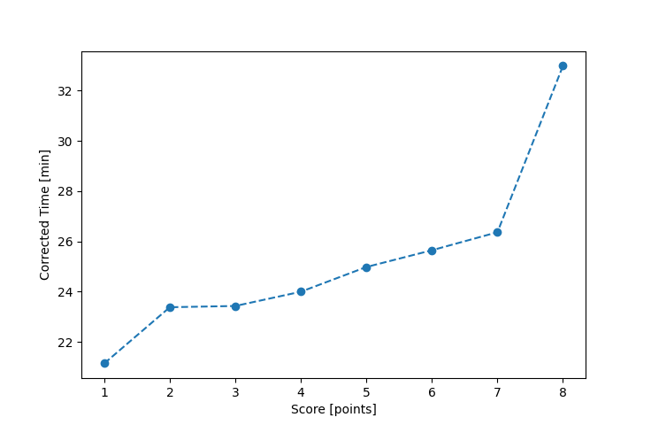

| Wind: | 2-3 (BFT) |
|---|---|
| RC: | Nedra_FMike_F |
| Date: | May 31, 2020 |
| Notes: | M2 Starboard |
| Rank / Score | Name | Boat | Input Time [mm:ss] | Input Offset [mm:ss] | Race Time [mm:ss] | Race Time [s] | Handicap | Corrected Time [s] | Corrected Time [mm:ss] |
|---|---|---|---|---|---|---|---|---|---|
| 1.0 | Ron_F | F5 | 22:57 | 00:00 | 22:57 | 1377 | 0.96600 | 1425 | 23:45 |
| 2.0 | Rod_H | LASEM | 23:10 | 00:00 | 23:10 | 1390 | 0.97300 | 1429 | 23:49 |
| 3.0 | Bill_P | SF | 26:15 | 00:00 | 26:15 | 1575 | 1.00400 | 1569 | 26:09 |
| 4.0 | Barry_O | HLR14 | 29:17 | 00:00 | 29:17 | 1757 | 1.11700 | 1573 | 26:13 |
| 5.0 | Nick_H | SF | 28:10 | 00:00 | 28:10 | 1690 | 1.00400 | 1683 | 28:03 |
| 6.0 | Ian_O | SF | 32:08 | 00:00 | 32:08 | 1928 | 1.00400 | 1920 | 32:00 |
| 7.0 | Jim_S | SF | 42:22 | 00:00 | 42:22 | 2542 | 1.00400 | 2532 | 42:12 |
| 8.0 | Matt_L | DLPSR | 60:00 | 00:00 | 60:00 | 3600 | 1.08600 | 3315 | 55:15 |

Application Notes:
All race results are unofficial
View source code at https://github.com/cessnao3/portsmouthracecalc/